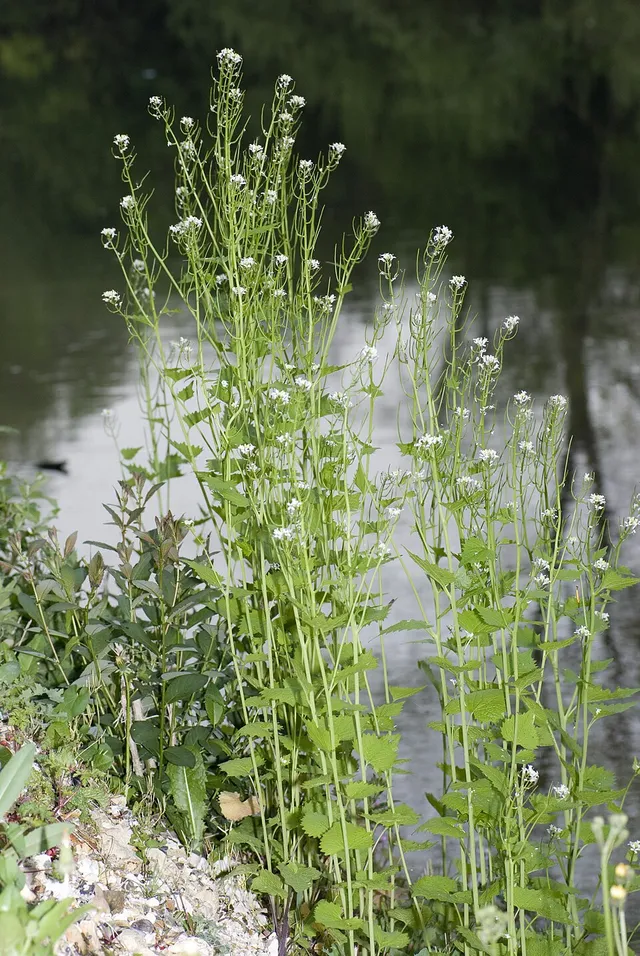

Wild green · Apr–Jun
Garlic mustard
Alliaria petiolata
Also called Löktrav
Garlic mustard is a wild green you can forage from April to June in Götaland (south). Heart-shaped toothed leaves smelling of garlic when crushed; small white four-petalled flowers on hedgebanks.

When is garlic mustard in season in Sweden?
Garlic mustard is usually in season April to June. Timing shifts with weather, latitude and altitude.
Where does garlic mustard grow in Sweden?
Garlic mustard grows in Blekinge, Gotland, Halland, Jönköping, Kalmar, Kronoberg, Skåne, Västra Götaland, Östergötland. Regions: Götaland (south).
How do you recognise garlic mustard?
Heart-shaped toothed leaves smelling of garlic when crushed; small white four-petalled flowers on hedgebanks.
How do you harvest garlic mustard?
Pick young leaves in spring and the tender flowering tops; pulling whole plants is fine where it is invasive.
How do you eat garlic mustard?
Salads, sauces, pesto.
How do you store garlic mustard?
Pesto.
What is garlic mustard good for?
Vitamin A, Vitamin C.